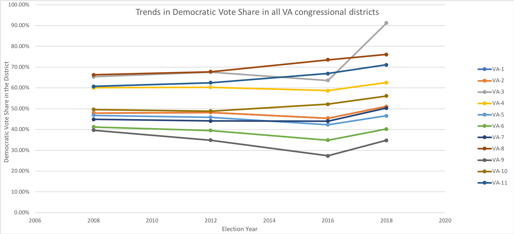
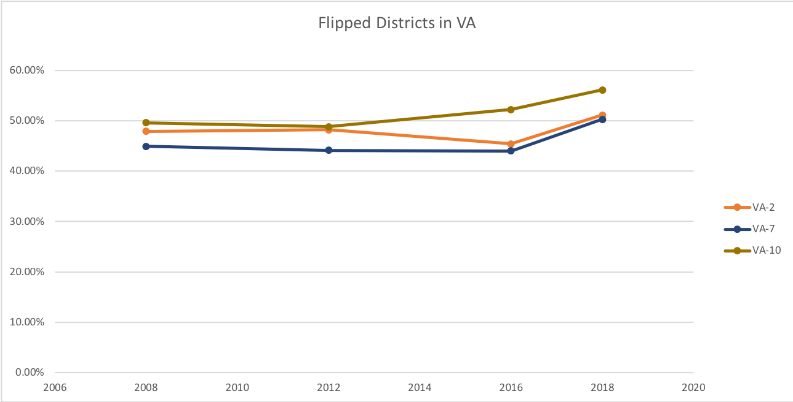
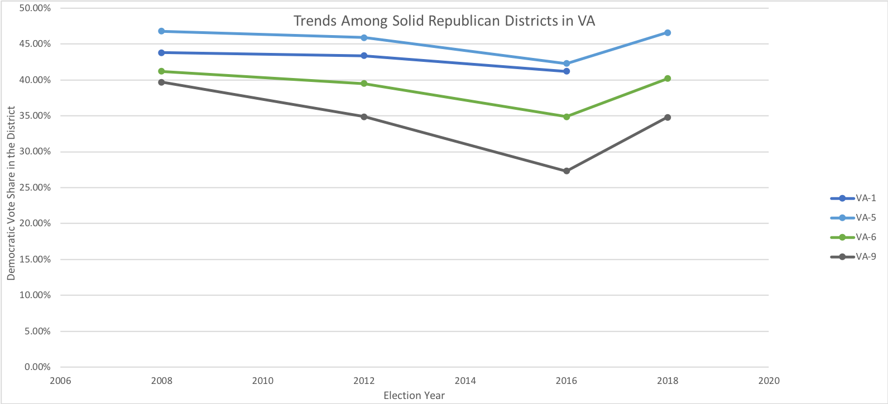
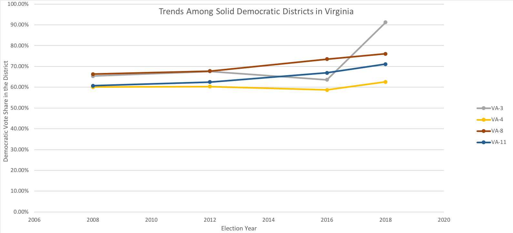

This is the graph displaying the reults from these four elections in all Virginia congressional districts.

Competitive Districts in VA that flipped from the GOP to Democrats

The first graph shows the trend in Democratic vote share in
every district in the state.
The first graph shows the trend in Democratic vote share in
the districts that flipped for the GOP to Democrats in 2018.
This is the graph displaying the reults from the safe Rebublican Districts.

Trends in Districts that have remained safely Democratic

The above graph shows the trend in Democratic vote share in the
safe Republican districts.
The first graph shows the trend in Democratic vote share in
the districts that are safe Democratic seats.